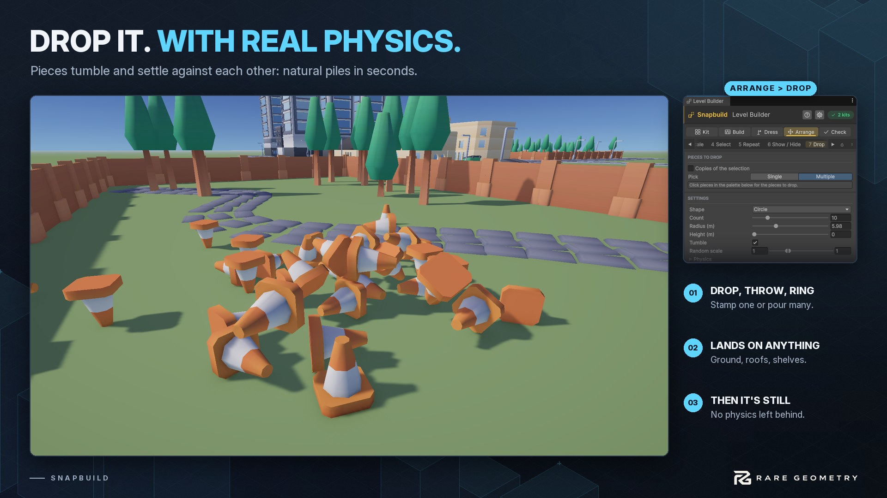

Physics Tab
Real physics for building: drop, throw and settle pieces so they land the way things really do (Shift+3 over the Scene view picks it while it's the third tab). The fall always happens in a hidden copy of the area round it: nothing else in your scene moves (not even objects with a Rigidbody of their own), and once settled the pieces are ordinary placed pieces, with nothing physical left on them. They land on whatever is there (the ground, a terrain, roofs, tables, shelves, walls) by their colliders, or by their meshes when they have none. Scatter such as grass is fallen through. You see them fall: each stops exactly where it rests (a long fall is sped up to a few seconds); Undo, saving or another drop just ends the show. Space is the main action in every tool.


Drop #
Drop pieces and let them settle: crates in a heap, rubble, rocks down a slope, books on a shelf, litter on a table.
- What drops: the pieces picked in the palette (Single or Multiple, with weights as in the Brush), or tick Copies of the selection to drop copies of the selected objects (picked at random; prefab copies stay linked to their prefab).
- Shape:
- Stamp: one piece, as the Build tab's Stamp places it: its ghost shows under the mouse (at Height, where it starts to fall), R and Shift+R turn it, T and Shift+T tilt it (hold R or T and move the mouse to do it freely), and a click (or Space) drops it there to settle, tipping onto a slope, against a wall, into a corner. The pick list is single while it's chosen; with Copies of the selection, it stamps copies of the first selected object.
- Circle: Count pieces over the Radius under the mouse, from Height above the ground: click, or Space.
- Throw: thrown from its start at the spot clicked (or Space). The start is a point with a move handle: set a few metres back toward you the first time you aim; drag it anywhere (Put the start back sets it again). Arc 0 throws them straight at it, fast; higher lobs them up and over. They fly, land and roll; the path the first one flies shows while you aim. More than one are thrown one behind the other along that path.
- Box, Line, Ring, drag on the ground: a box they're spread over, a line they're laid along, or a ring (from its middle out) they're laid round. Space drops the last one again.
- Tumble (on) starts each one turned any way, so they land every which way. Off: upright, turned at random round their up axis. Random scale sizes each between two values.
- A drop over something tall starts above it; a piece with nothing under it at all is taken away again (you're told).
- One Undo step per drop. N drops the last ones again with a new mix; Shift+N selects them.
Scatter #
Mess the selection up: believably. Select objects (each placed piece moves on its own; a selected folder stands for the pieces in it), pick how, and press Space (or the button):
- Spread: each piece is tossed to a random spot on the ground within the Radius round the selection's middle.
- Explode: blown outward from the selection's middle (Space), or from where you click; Strength sets how hard (the nearest fly furthest).
- Heap: everything tossed to the middle, landing one after another into a pile (Pile size: smaller makes it taller).
- Nudge: each piece hops a little way (Nudge, at most) from where it is: variety without changing the layout.
Each piece flies its own arc and tumbles as it goes (only turns round, with Keep upright); they land, roll and settle with real physics, never inside anything. The button is in the Scene overlay too. One Undo step each time.
Arrange #
Tidy the selection up. Select objects (each placed piece moves on its own; a selected folder stands for the pieces in it) and pick a shape. Then press Space (or the button) and draw where they go in the Scene view, until then, clicks select as usual:
- Line: drag a line: they're spread evenly from one end to the other.
- Arc: drag from one end of the curve to the other; Bend is how much of a circle it is (180: a half circle). It bends to the left of the way you drag.
- Circle: drag from its middle out, or click its middle (the Radius; 0 makes it just big enough).
- Grid: drag the rectangle they fill (as many Columns as its shape suits, or the number set), or click its middle (as far apart as the biggest plus the Gap).
- Level: click a spot: every bottom goes to its height.
Pressing Space again instead of drawing uses the selection's own shape: a line or arc between the two furthest apart, a circle or grid round the middle, level at the lowest, average or highest. Esc stops drawing.
Line, Arc and Circle can turn each piece as it goes (Facing: keep, along the line, in to the middle, out; a piece's front is its blue Z arrow). Each lands on what's under its new spot; with Settle after arranging, physics settles them afterwards. Where they'll go shows as you draw. Shift- or Ctrl-click still select while drawing. One Undo step each time.
Settle #
Under the shapes, for the selection as it stands (each placed piece on its own; a selected folder stands for the pieces in it):
- Drop lets them fall from where they are and settle on what's under them, tidy props that float a little, or tip a pile over.
- Untangle (U) pushes pieces that are inside each other apart and lifts ones sunk into the ground or a floor back on top: gently, with gravity off, so nothing flies. With Settle after untangling (on) they drop afterwards.
- One Undo step each. Both are in the Scene overlay too.
Physics settings #
Shared by every Physics tool (the Physics foldout):
- Bounce: how much things bounce when they land (0: not at all, 1: as high as they fell).
- Friction, how much they grip (0: they slide like on ice, 1: they stop where they land), what they land on gets the same, so the setting decides.
- Keep upright: they stand up first (one that fell over stands again, facing the way it did) and never tip over, only turn round their up axis: furniture, trees, crates that should stand. In Place, Tumble then only turns them round.
- Time to settle: the longest they're given to come to rest, up to a minute (they stop sooner once they're still). You see up to ten seconds of it; a longer fall plays faster.